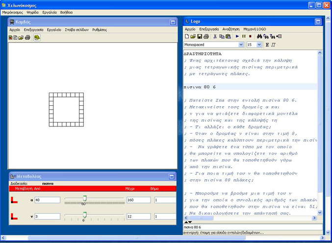

| Μαθηματικά Α΄ Γυμνασίου - Α.4.2 Επίλυση προβλημάτων - Δραστηριότητα 2η | |
|

Για την διεξαγωγή της δραστηριότητας, θα πρέπει να έχετε εγκαταστήσει στον υπολογιστή σας το λογισμικό Αβάκιο E-Slate 2. Αν δεν το έχετε, μπορείτε να το κατεβάσετε από εδώ. Αφού το εγκαταστήσετε, κατεβάστε τα αρχεία της δραστηριότητας, κάνοντας κλικ στο σύνδεσμο Λήψη Αρχείων και αποσυμπιέσετε τα στον υπολογιστή σας. |
|
| Γεώργιος Ψυχάρης, Ελένη Καλαϊτζίδου | Πληροφορίες Λήψη Αρχείων Κλείσιμο |